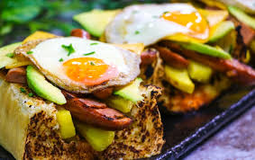

BEEF LASAGNE
Beef lasagne is an italian dish made of stacked layers of lasagne alternting with fillings such as ground meat, tomato sauce, vegetables,cheese such as parmesan, ricotta & mozzarella. Also, it seasoned with italian seasons such a garlic, spices oregano & basil. The dish may be topped with grated cheese, which becomes meleted after baking.
1 plate serves 2 people
R45

Chicken & Beef wraps
A great friday night go-to meal, theses chicken & beef wraps make you feel like you are having take away but with all the grease. The fillings are endless, such as steak, chicken breast, lettuce, limes, onions, parsley or coriander, pepper, salt & secret delicious sauces
1 plate serves person
R25
KOTA
South Africa's best known street food, the kota sandwhich is an approximation of the word "quarter", for the kota of the loaf bread that is the base of sandwich. The bread is hollowed out, filled first with a layer of seasoned fries, then topped with optional layers of secret delicious sauces, cheese, polony, egg, atchar & meat.
1 plate serves 1
R25